【论文导读】大语言模型综述（三）：主流大语言模型介绍
Info
xxxxxxxxxx301**视频简介** 2本系列为《A Survey of Large Language Model》的论文导读系列视频，本视频导读内容为论文的第三章，即Resources of LLMs部分。3讲演大纲：4- Common Misleadings5 - Model, Agent and Product6 - Who is best7- Publicly Available or Proprietary8 - LLaMA Series Model (Meta AI)9 - GPT Series Model (OpenAI)10- Awesome Large Language Models11 - GLM Series (Zhipu AI & Tsinghua University)12 - Mixtral Series (Mistral AI)13 - Gemeni Series (Google)14 - Claude Series (Anthropic)15论文引用:16Bai, Y., Lv, X., Zhang, J., He, Y., Qi, J., Hou, L., Tang, J., Dong, Y., & Li, J. (2024). LongAlign: A Recipe for Long Context Alignment of Large Language Models (arXiv:2401.18058). arXiv. https://doi.org/10.48550/arXiv.2401.1805817Chen, M., Tworek, J., Jun, H., Yuan, Q., Pinto, H. P. de O., Kaplan, J., Edwards, H., Burda, Y., Joseph, N., Brockman, G., Ray, A., Puri, R., Krueger, G., Petrov, M., Khlaaf, H., Sastry, G., Mishkin, P., Chan, B., Gray, S., … Zaremba, W. (2021). Evaluating Large Language Models Trained on Code (arXiv:2107.03374). arXiv. http://arxiv.org/abs/2107.0337418Chiang, W.-L., Zheng, L., Sheng, Y., Angelopoulos, A. N., Li, T., Li, D., Zhang, H., Zhu, B., Jordan, M., Gonzalez, J. E., & Stoica, I. (2024). Chatbot Arena: An Open Platform for Evaluating LLMs by Human Preference (arXiv:2403.04132). arXiv. https://doi.org/10.48550/arXiv.2403.0413219Du, Z., Qian, Y., Liu, X., Ding, M., Qiu, J., Yang, Z., & Tang, J. (2022). GLM: General Language Model Pretraining with Autoregressive Blank Infilling (arXiv:2103.10360). arXiv. https://doi.org/10.48550/arXiv.2103.1036020GLM Team. (2024). ChatGLM: A Family of Large Language Models from GLM-130B to GLM-4 All Tools (arXiv:2406.12793). arXiv. https://doi.org/10.48550/arXiv.2406.1279321Hendrycks, D., Burns, C., Basart, S., Zou, A., Mazeika, M., Song, D., & Steinhardt, J. (2021). Measuring Massive Multitask Language Understanding (arXiv:2009.03300). arXiv. https://doi.org/10.48550/arXiv.2009.0330022Hendrycks, D., Burns, C., Kadavath, S., Arora, A., Basart, S., Tang, E., Song, D., & Steinhardt, J. (2021). Measuring Mathematical Problem Solving With the MATH Dataset (arXiv:2103.03874). arXiv. https://doi.org/10.48550/arXiv.2103.0387423Jiang, A. Q., Sablayrolles, A., Roux, A., Mensch, A., Savary, B., Bamford, C., Chaplot, D. S., Casas, D. de las, Hanna, E. B., Bressand, F., Lengyel, G., Bour, G., Lample, G., Lavaud, L. R., Saulnier, L., Lachaux, M.-A., Stock, P., Subramanian, S., Yang, S., … Sayed, W. E. (2024). Mixtral of Experts (arXiv:2401.04088). arXiv. http://arxiv.org/abs/2401.0408824Liu, X., Lai, H., Yu, H., Xu, Y., Zeng, A., Du, Z., Zhang, P., Dong, Y., & Tang, J. (2023). WebGLM: Towards An Efficient Web-Enhanced Question Answering System with Human Preferences (arXiv:2306.07906). arXiv. https://doi.org/10.48550/arXiv.2306.0790625Rein, D., Hou, B. L., Stickland, A. C., Petty, J., Pang, R. Y., Dirani, J., Michael, J., & Bowman, S. R. (2023). GPQA: A Graduate-Level Google-Proof Q&A Benchmark (arXiv:2311.12022). arXiv. https://doi.org/10.48550/arXiv.2311.1202226Rozière, B., Gehring, J., Gloeckle, F., Sootla, S., Gat, I., Tan, X. E., Adi, Y., Liu, J., Sauvestre, R., Remez, T., Rapin, J., Kozhevnikov, A., Evtimov, I., Bitton, J., Bhatt, M., Ferrer, C. C., Grattafiori, A., Xiong, W., Défossez, A., … Synnaeve, G. (2024). Code Llama: Open Foundation Models for Code (arXiv:2308.12950). arXiv. https://doi.org/10.48550/arXiv.2308.1295027Touvron, H., Lavril, T., Izacard, G., Martinet, X., Lachaux, M.-A., Lacroix, T., Rozière, B., Goyal, N., Hambro, E., Azhar, F., Rodriguez, A., Joulin, A., Grave, E., & Lample, G. (2023a). LLaMA: Open and Efficient Foundation Language Models (arXiv:2302.13971). arXiv. https://doi.org/10.48550/arXiv.2302.1397128Touvron, H., Martin, L., Stone, K., Albert, P., Almahairi, A., Babaei, Y., Bashlykov, N., Batra, S., Bhargava, P., Bhosale, S., Bikel, D., Blecher, L., Ferrer, C. C., Chen, M., Cucurull, G., Esiobu, D., Fernandes, J., Fu, J., Fu, W., … Scialom, T. (2023b). Llama 2: Open Foundation and Fine-Tuned Chat Models (arXiv:2307.09288). arXiv. https://doi.org/10.48550/arXiv.2307.0928829Xu, R., Wang, Z., Fan, R.-Z., & Liu, P. (2024). Benchmarking Benchmark Leakage in Large Language Models (arXiv:2404.18824). arXiv. https://doi.org/10.48550/arXiv.2404.1882430Zeng, A., Liu, X., Du, Z., Wang, Z., Lai, H., Ding, M., Yang, Z., Xu, Y., Zheng, W., Xia, X., Tam, W. L., Ma, Z., Xue, Y., Zhai, J., Chen, W., Zhang, P., Dong, Y., & Tang, J. (2022). GLM-130B: An Open Bilingual Pre-trained Model (arXiv:2210.02414). arXiv. https://doi.org/10.48550/arXiv.2210.02414Outline
- Model, Agent and Product
- Who is best
Common Misunderstandings
Model, Agent and Product
Model

Left: Core files of LLaMA-2.* Right: Ollama runs a large language model with command line interface.*
Agent
Agent based on gpt-4o.*
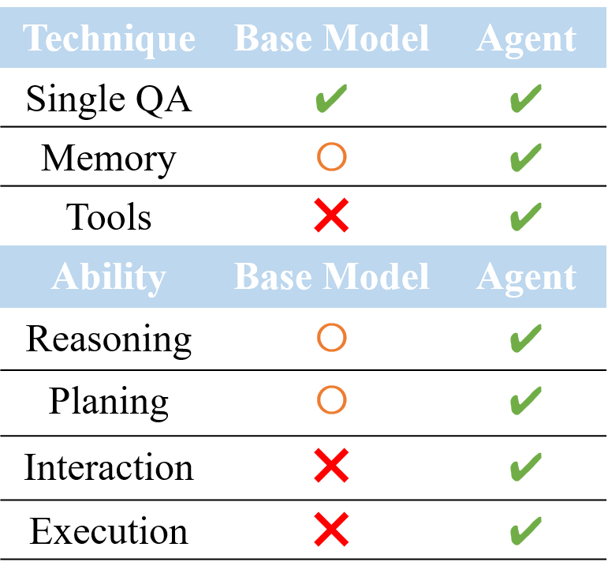Agent vs. base model.
Product
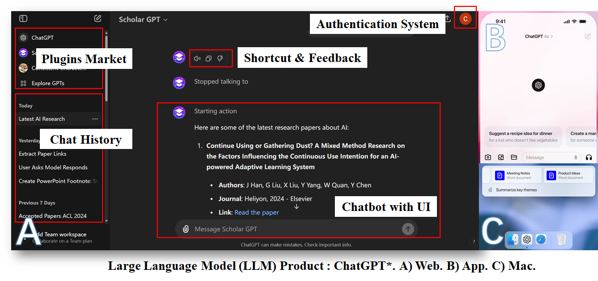
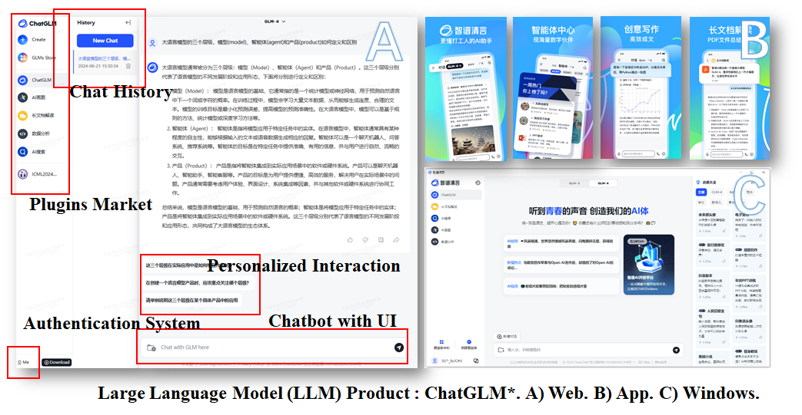
Relationship
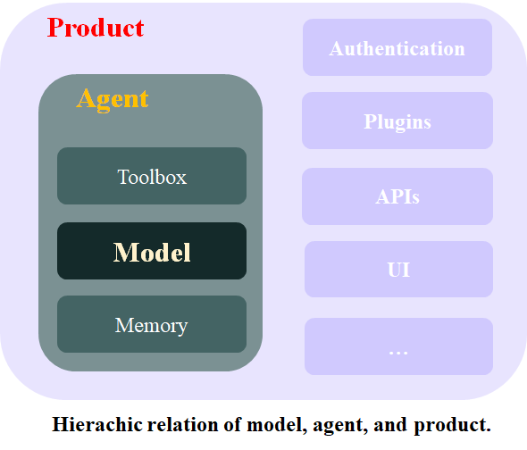
Who is best
Evalution LLMs on Benchmarks
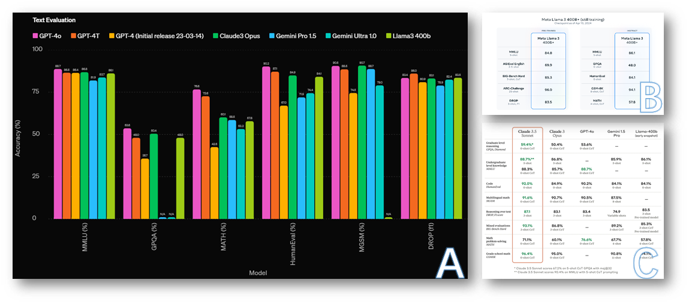
Data contamination
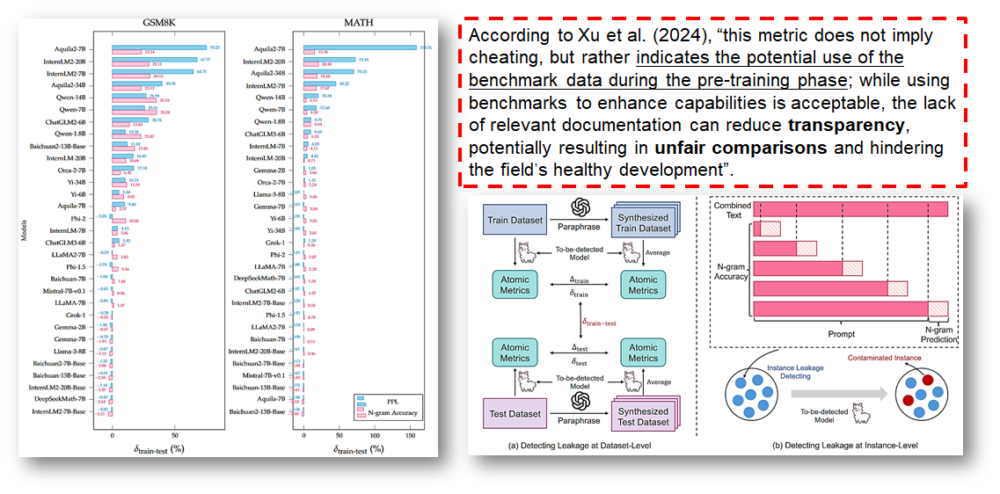
Evaluating LLMs by Human Preference


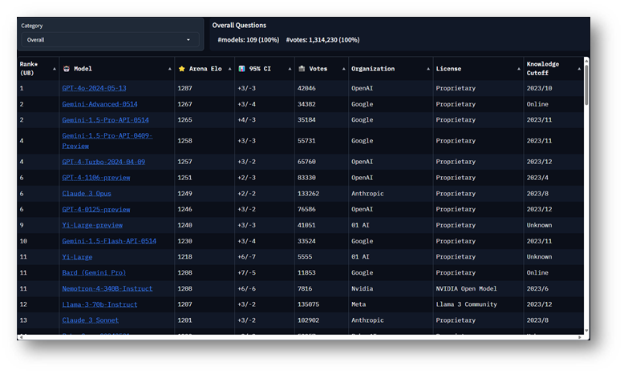
Publicly Available or Proprietary
LLaMA Series Model (Meta AI )
Model Files in Huggingface (AI researcher recommended)
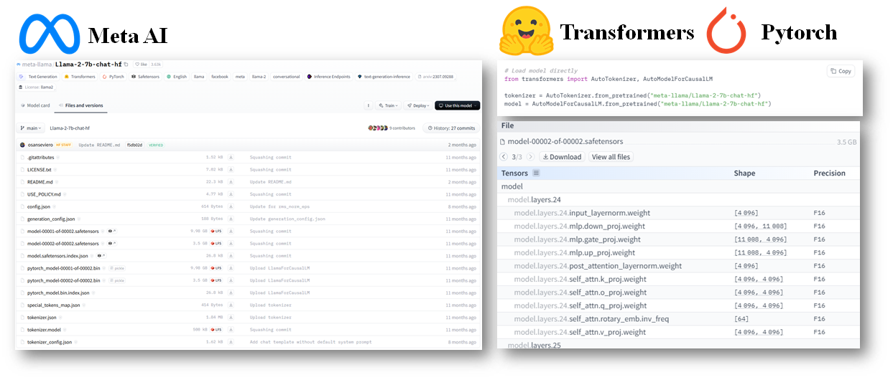
Model Files in Ollama (application developer recommended)
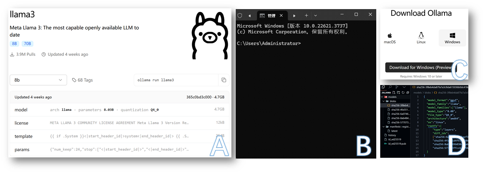
Evolution of LLaMA
| Name | Release date | Parameters | Training cost (petaFLOP-day) | Context length | Corpus size | Commercial viability? |
|---|---|---|---|---|---|---|
| LLaMA (discard) (Touvron et al., 2023a) | February 24, 2023 | 6.7B | 6,300 | 2048 | 1–1.4T | No |
| 13B | ||||||
| 32.5B | ||||||
| 65.2B | ||||||
| LLaMA 2 (Touvron et al., 2023b) | July 18, 2023 | 6.7B | 21,000 | 4096 | 2T | Yes |
| 13B | ||||||
| 69B | ||||||
| Code LLaMA (Rozière et al., 2024) | August 24, 2023 | 6.7B | 4096 | 2T | Yes | |
| 13B | ||||||
| 33.7B | ||||||
| 69B | ||||||
| LLaMA 3 | April 18, 2024 | 8B | 100,000 | 8192 | 15T | Yes |
| 70.6B | ||||||
| 400B+ (unreleased) |
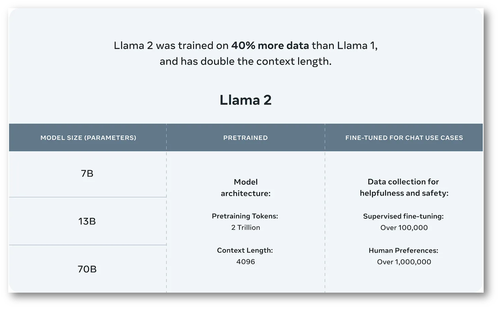
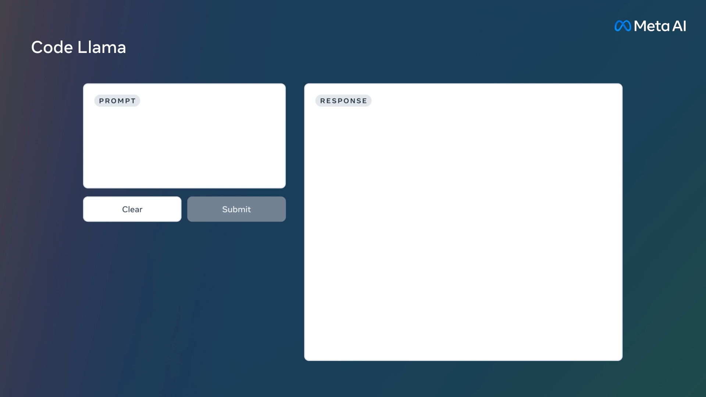
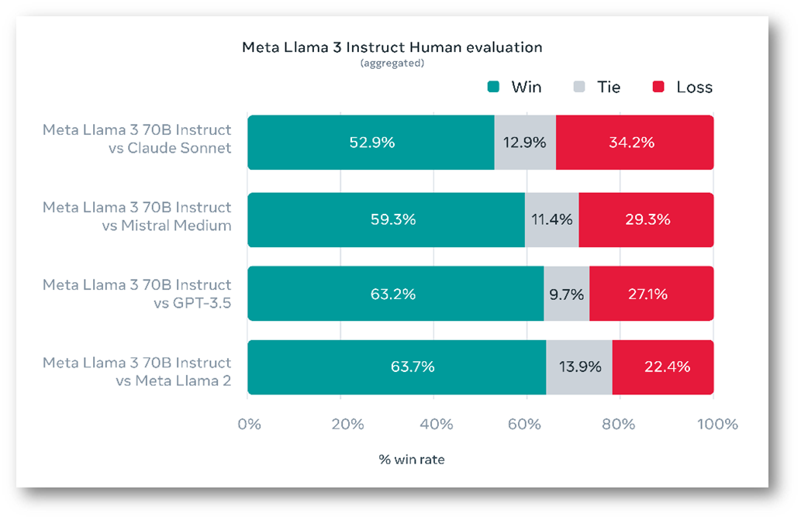
Importance of Instruction Tuning
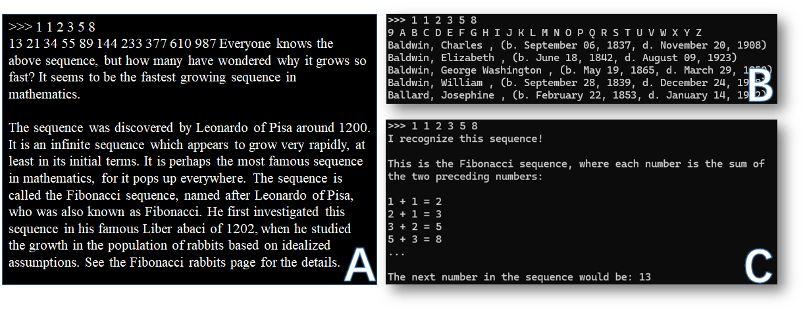
GPT Series Model (OpenAI 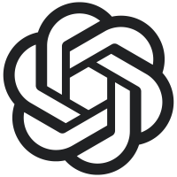)
Access GPT by APIs
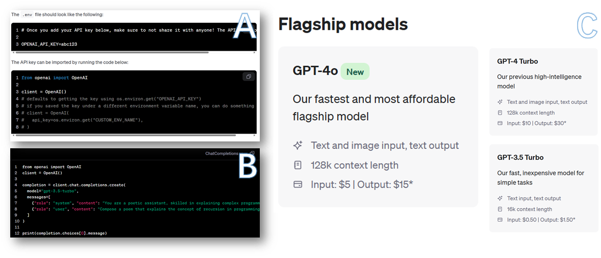
Well-developed LLM-based Product

Awesome Large Language Models
GLM Series (Zhipu AI 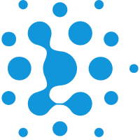& Tsinghua University  )
)
GLM (Du et al., 2022) → GLM-130B (Zeng et al., 2022) → ChatGLM-6B [GitHub, 2023] → WebGLM (Liu et al., 2023) → ChatGLM2-6B [GitHub, 2023] → ChatGLM3-6B [GitHub, 2023] → GLM4-9B (GLM Team, 2024)
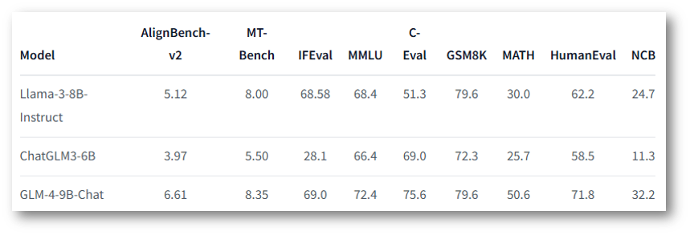
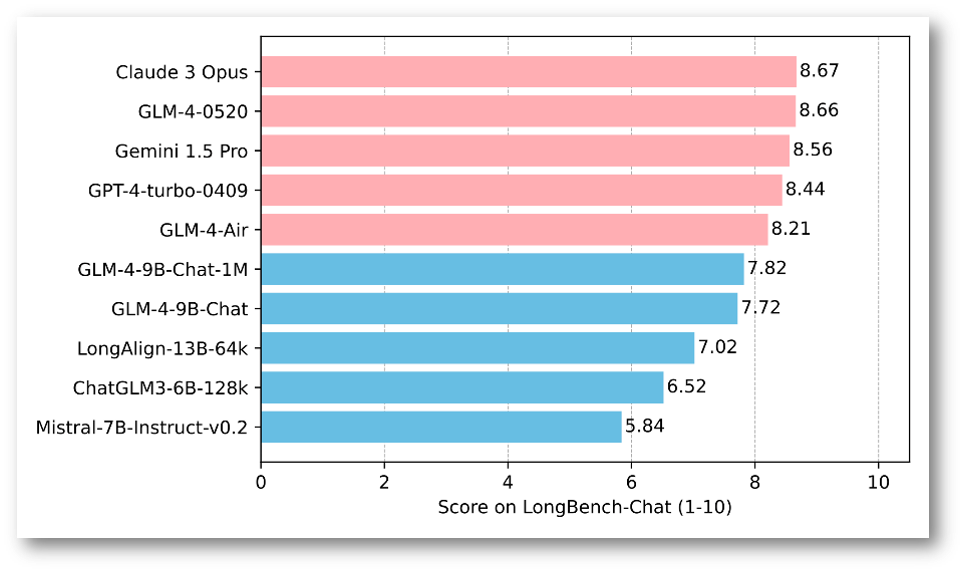
Mixtral Series (Mistral AI )
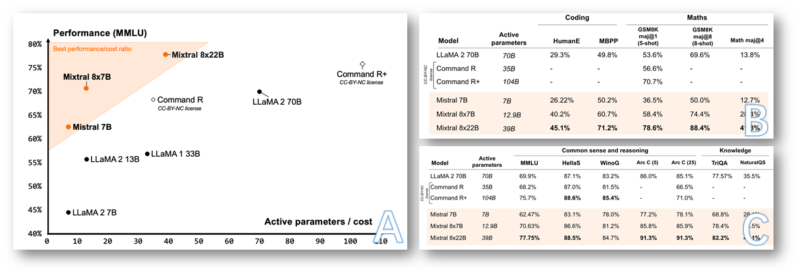
Claude Series (Anthropic )
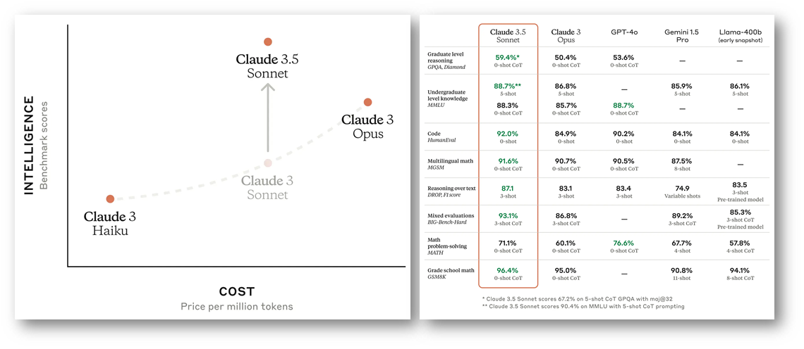
Gemeni Series (Google )

References
Bai, Y., Lv, X., Zhang, J., He, Y., Qi, J., Hou, L., Tang, J., Dong, Y., & Li, J. (2024). LongAlign: A Recipe for Long Context Alignment of Large Language Models (arXiv:2401.18058). arXiv. https://doi.org/10.48550/arXiv.2401.18058
Chen, M., Tworek, J., Jun, H., Yuan, Q., Pinto, H. P. de O., Kaplan, J., Edwards, H., Burda, Y., Joseph, N., Brockman, G., Ray, A., Puri, R., Krueger, G., Petrov, M., Khlaaf, H., Sastry, G., Mishkin, P., Chan, B., Gray, S., … Zaremba, W. (2021). Evaluating Large Language Models Trained on Code (arXiv:2107.03374). arXiv. http://arxiv.org/abs/2107.03374
Chiang, W.-L., Zheng, L., Sheng, Y., Angelopoulos, A. N., Li, T., Li, D., Zhang, H., Zhu, B., Jordan, M., Gonzalez, J. E., & Stoica, I. (2024). Chatbot Arena: An Open Platform for Evaluating LLMs by Human Preference (arXiv:2403.04132). arXiv. https://doi.org/10.48550/arXiv.2403.04132
Du, Z., Qian, Y., Liu, X., Ding, M., Qiu, J., Yang, Z., & Tang, J. (2022). GLM: General Language Model Pretraining with Autoregressive Blank Infilling (arXiv:2103.10360). arXiv. https://doi.org/10.48550/arXiv.2103.10360
GLM Team. (2024). ChatGLM: A Family of Large Language Models from GLM-130B to GLM-4 All Tools (arXiv:2406.12793). arXiv. https://doi.org/10.48550/arXiv.2406.12793
Hendrycks, D., Burns, C., Basart, S., Zou, A., Mazeika, M., Song, D., & Steinhardt, J. (2021). Measuring Massive Multitask Language Understanding (arXiv:2009.03300). arXiv. https://doi.org/10.48550/arXiv.2009.03300
Hendrycks, D., Burns, C., Kadavath, S., Arora, A., Basart, S., Tang, E., Song, D., & Steinhardt, J. (2021). Measuring Mathematical Problem Solving With the MATH Dataset (arXiv:2103.03874). arXiv. https://doi.org/10.48550/arXiv.2103.03874
Jiang, A. Q., Sablayrolles, A., Roux, A., Mensch, A., Savary, B., Bamford, C., Chaplot, D. S., Casas, D. de las, Hanna, E. B., Bressand, F., Lengyel, G., Bour, G., Lample, G., Lavaud, L. R., Saulnier, L., Lachaux, M.-A., Stock, P., Subramanian, S., Yang, S., … Sayed, W. E. (2024). Mixtral of Experts (arXiv:2401.04088). arXiv. http://arxiv.org/abs/2401.04088
Liu, X., Lai, H., Yu, H., Xu, Y., Zeng, A., Du, Z., Zhang, P., Dong, Y., & Tang, J. (2023). WebGLM: Towards An Efficient Web-Enhanced Question Answering System with Human Preferences (arXiv:2306.07906). arXiv. https://doi.org/10.48550/arXiv.2306.07906
Rein, D., Hou, B. L., Stickland, A. C., Petty, J., Pang, R. Y., Dirani, J., Michael, J., & Bowman, S. R. (2023). GPQA: A Graduate-Level Google-Proof Q&A Benchmark (arXiv:2311.12022). arXiv. https://doi.org/10.48550/arXiv.2311.12022
Rozière, B., Gehring, J., Gloeckle, F., Sootla, S., Gat, I., Tan, X. E., Adi, Y., Liu, J., Sauvestre, R., Remez, T., Rapin, J., Kozhevnikov, A., Evtimov, I., Bitton, J., Bhatt, M., Ferrer, C. C., Grattafiori, A., Xiong, W., Défossez, A., … Synnaeve, G. (2024). Code Llama: Open Foundation Models for Code (arXiv:2308.12950). arXiv. https://doi.org/10.48550/arXiv.2308.12950
Touvron, H., Lavril, T., Izacard, G., Martinet, X., Lachaux, M.-A., Lacroix, T., Rozière, B., Goyal, N., Hambro, E., Azhar, F., Rodriguez, A., Joulin, A., Grave, E., & Lample, G. (2023a). LLaMA: Open and Efficient Foundation Language Models (arXiv:2302.13971). arXiv. https://doi.org/10.48550/arXiv.2302.13971
Touvron, H., Martin, L., Stone, K., Albert, P., Almahairi, A., Babaei, Y., Bashlykov, N., Batra, S., Bhargava, P., Bhosale, S., Bikel, D., Blecher, L., Ferrer, C. C., Chen, M., Cucurull, G., Esiobu, D., Fernandes, J., Fu, J., Fu, W., … Scialom, T. (2023b). Llama 2: Open Foundation and Fine-Tuned Chat Models (arXiv:2307.09288). arXiv. https://doi.org/10.48550/arXiv.2307.09288
Xu, R., Wang, Z., Fan, R.-Z., & Liu, P. (2024). Benchmarking Benchmark Leakage in Large Language Models (arXiv:2404.18824). arXiv. https://doi.org/10.48550/arXiv.2404.18824
Zeng, A., Liu, X., Du, Z., Wang, Z., Lai, H., Ding, M., Yang, Z., Xu, Y., Zheng, W., Xia, X., Tam, W. L., Ma, Z., Xue, Y., Zhai, J., Chen, W., Zhang, P., Dong, Y., & Tang, J. (2023). GLM-130B: An Open Bilingual Pre-trained Model (arXiv:2210.02414). arXiv. https://doi.org/10.48550/arXiv.2210.02414